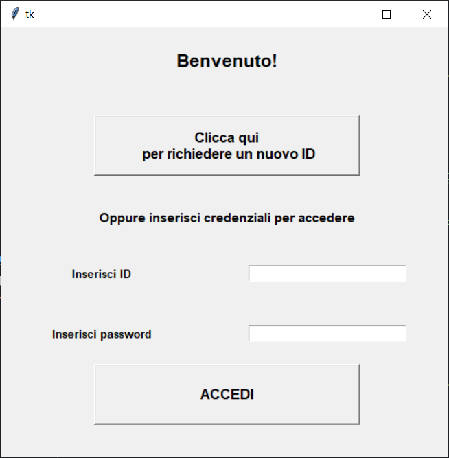
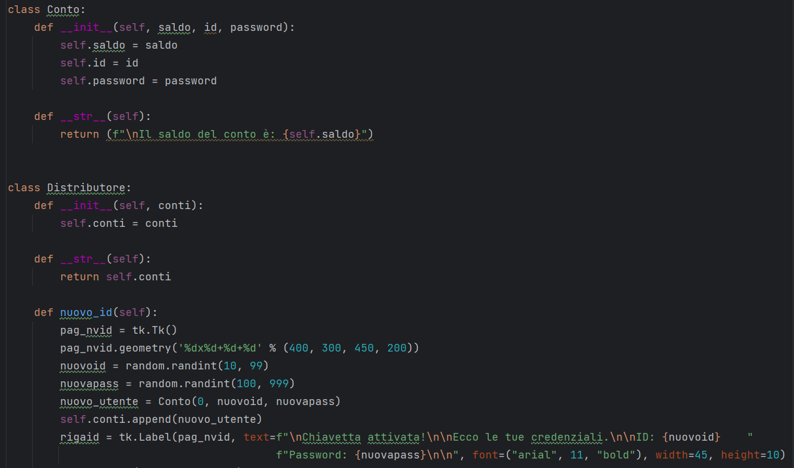
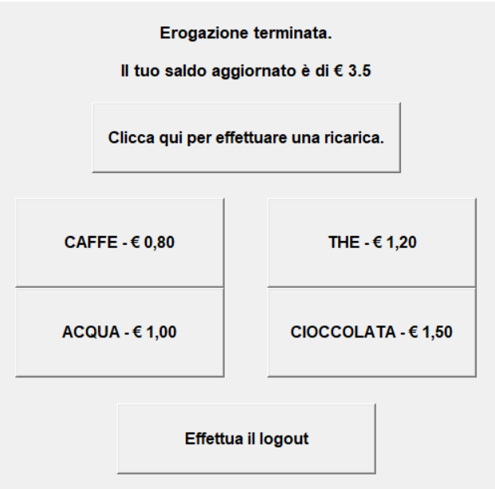

Il progetto gestisce un distributore di bevande.
L'utente deve inserire il suo ID
chiavetta oppure crearne uno nuovo e dopo essersi loggato con le credenziali corrette può scegliere se
effettuare una ricarica o selezionare una bevanda.
Per la generazione di un nuovo ID e di una nuova
password è stata utilizzata la libreria Random.


Il progetto è costruito su due classi.
La classe Conto contiene l'ID, il saldo e
le credenziali di ogni utente.
La classe Distributore raccoglie tutti gli id delle chiavette attive.
Dentro quest'ultima sono implementati i metodi che agiscono sui dati degli ID, ovvero il versamento
e l'erogazione con relativi aggiornamenti del saldo.

Alla fine di ogni erogazione, il display visualizza in automatico il saldo aggiornato
direttamente nella schermata principale.
I messaggi di avviso invece, come quello di accesso negato e
di accesso effettuato, vengono visualizzati come pop-up sfruttando la libreria messagebox di Tkinter.
